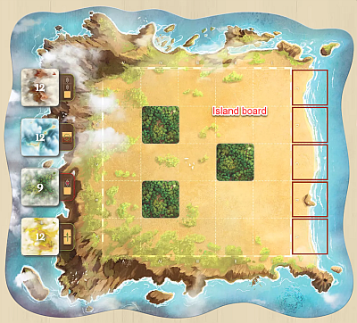
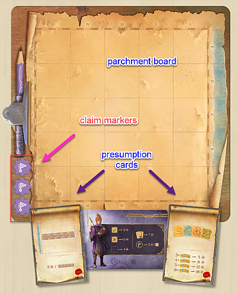
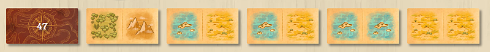
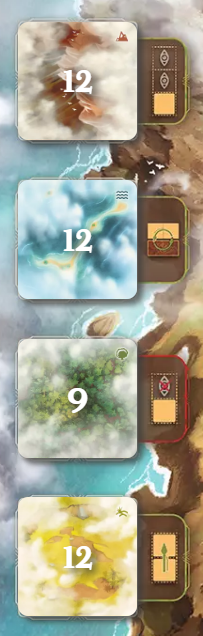

Mapsofmisterra
Board Game Arena 官方规则文档
Overview
You are a cartographer mapping out the topography of the mysterious island of Misterra.
As a cartographer, it is your decision to be faithful to the actual topography of the island or bend the rules a little to confirm the presumptions of your sponsor.
At the end of the game, you will be judged by the faithfulness and completion of your map, the regions that you have claimed, and how much or how little you have kowtowed to your sponsor. :)
Terminologies

Island board represents the actual topography of the island of Misterra.

Parchment board - The map that you are making your sketches. It CAN deviate from "reality". It all depends on your integrity. ;)
Presumptions cards - Presumptions made by your sponsors. You can think of these as your individual goals. Keep in mind that they only refer to what are on your parchment board, not "reality".
Claim markers - Each cartographer can place up to three claim markers. Each of them must be placed on a different type of terrains and claimed areas will be scored at the end.

Sketch cards What you will use to complete your parchment board.

Terrain tiles: Have hazy and clear sides.
Game Play
Each turn consists of TWO half days -- you perform the same set of actions twice, in the order below:
1. MOVE your cartographer one spot orthogonally (optional). Except on your very first turn when you will place your cartographer on the beach. You can never move onto an empty spot on the Island Map.
Each type of terrain will trigger its own unique effect when you land on them. Detailed below.
2. CHOOSE a sketch card (mandatory)
3. MAP OR CLAIM (optional)
Mapping - Place the sketch card on your Parchment board to map. Sketch cards can only be placed orthogonally adjacent to your cartographer on your parchment board, unless if you are on a mountain tile, then you can go one further.
Mapping effect on your parchment board - overlapping of sketch cards are very much allowed. The new terrain will replace the existing on your parchment board. Keep in mind that your Presumption Cards score what is on your parchment board, NOT the island board.
Mapping effect on the island board - a terrain tile will be placed with its hazy side up when the sketch card is placed on that spot OR a different terrain one was placed over a hazy terrain tile.
When a second sketch card of the same terrain is placed. The terrain tile on the Island board will be flipped to its clear side - that terrain becomes permanent (confirmed). Sketch card that differ from the actual island board can still be placed on your parchment board. It will change the terrain only on your parchment board, but will have no effect on the island board.
Claiming - Discard the sketch card that you have just picked up to claim the area. Each area can only be claimed by one player and only permanent tiles can be claimed. If areas claimed by different players end up joining, both will score that area at game end. (The original rules state that neither will score, but that doesn't seem to be the way it is implemented on BGA.)
If you find that laying down your sketch card is not given as an option, check to see if you are on jungle terrain. More on terrain effects below
Terrain Effects
Terrain effects are triggered immediately when your cartographer lands on them. Note that terrain effects apply whether the terrain tiles are on their hazy or clear sides.
1. Steppes - allows your cartographer to move again
2. Jungle - prevents you from mapping. Claiming or passing are your only options when you are on a jungle tile.
3. Mountain - allows you to place a sketch card that is an additional spot away from your cartographer instead of immediately adjacent to them.
4. Lagoon - allows you to replace a sketch card in the display before picking.
Game End
Three conditions can trigger the game end.
1. All spaces on the island board contained confirmed terrain tiles.
2. The sketch card deck is empty and there are no more cards in display.
3. One of the players had filled out all spaces on their Parchment board.
Remaining players will still complete their round so everyone has same number of turns.
End Game Scoring
All unconfirmed (hazy) terrain tiles on the Island board are removed.
Claim markers on regions shared by multiple players are removed. Nobody score these regions.
Scoring:
1. Parchment board fidelity: +2 for each terrain tile on your Parchment board matching that on the Island board
2. Completeness: -1 for each empty spot on your Parchment board
3. Presumption cards: score by each's individual criteria
4. Claimed regions: +2 per tile for each region you have claimed